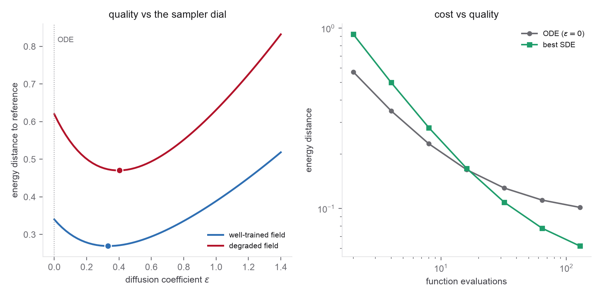

- The interpolant velocity and score objectives (Problems 1-2)
- The sampler family \(\mathrm dX=[b_t+\epsilon_t s_t]\,\mathrm dt+\sqrt{2\epsilon_t}\,\mathrm dW\) (Problem 2)
- The Euler-Maruyama scheme for SDEs (Week 2 Problem 3)
- The CFM training loop from Week 3 Problem 3
- Boltzmann densities \(p\propto e^{-V/k_BT}\) on a 2D free-energy surface (Week 2 Problem 3)
- Exact quadrature references and basin weights (Week 2 Problem 3, part 1)
- Stochastic Interpolants, §2.2 (objectives) and §2.3 (the sampler family)
- SiT, §2.4 and §3.2 for the diffusion-coefficient sweep and its effect
- Week 2 Problem 3 for the same free-energy surface and Euler-Maruyama sampler
- Week 3 Problem 3 for the training loop you extend
Scope. One 2D target, one trained model, many samplers. The physics is a stand-in for a molecular free-energy surface: a low-dimensional collective-variable projection of an equilibrium distribution, with several metastable basins separated by barriers. The lab's whole point is that a single interpolant, trained once, yields a family of samplers, and that the best member of the family is not always the deterministic ODE.
Target. Use the Müller-Brown surface \(V(x,y)\) of Week 2 Problem 3, at
\(k_BT\approx20\text{-}25\) in the standard units, and take \(q\propto e^{-V/k_BT}\) as the data density.
Do not generate the reference with MCMC or rejection: the target is two-dimensional and known, so
reuse the exact-quadrature machinery you already built, grid_normalize,
basin_assign, and exact_basin_weights. Normalize \(e^{-V/k_BT}\) on a fine grid,
check the boundary leakage is negligible, integrate the exact basin weights, and draw approximately IID
reference and training samples from the normalized grid. This gives you an answer key rather than an
uncertain second sampler, which is the whole point of Week 2 part 1. The barriers matter: at this
temperature the three basins are populated but well separated, so mode coverage is a real test.
Base \(\rho_0=\mathcal N(0,I)\). Standardize the data to zero mean and unit variance before training, so that the base actually matches the \(t\to0\) end of the path; report metrics in whichever coordinates you choose, but be consistent. Note the convention clash with the prerequisites: Week 2 writes \(e^{-V/k_BT}\) and the interpolant literature writes \(e^{-\beta U}\). These are the same object with \(\beta=1/k_BT\); pick one and say which.
Problems 1 and 2 proved that one interpolant gives a velocity, a score, and a family of samplers indexed by the diffusion coefficient \(\epsilon_t\). This lab makes that concrete and then stresses it. You train a single model to predict both fields, reproduce the marginals with the deterministic ODE, and then turn \(\epsilon_t\) up and watch what changes: on a rugged Boltzmann target, the stochastic sampler mixes between basins and corrects field error in ways the ODE cannot, but costs more steps. The deliverable is the trade-off curve, not a single number.

Reproducibility conventions. Fix these so that everyone's curves are comparable.
- Training times. Draw \(t\sim\mathcal U[\tau,1-\tau]\) with \(\tau=10^{-3}\). Never train or evaluate at \(t=0\) or \(t=1\).
- Sampler evaluations. Evaluate every drift at Euler-grid midpoints \(t_{k+1/2}=(k+\tfrac12)/N\), never at the endpoints.
- Basin-population error. Report the \(L^1\) form \(\mathrm{pop\_err}=\sum_k\big|\hat p_k-p_k^{\mathrm{ref}}\big|\) against the exact quadrature weights (this is twice the total variation distance between the two basin histograms; either is fine, but say which, or your numbers will differ from everyone else's by a factor of two).
- Function evaluations. Count one shared two-head forward pass as one NFE. If you use two separate networks, an SDE step costs two network calls and an ODE step one, so report step count and total network calls, and say which the cost axis of part 5 uses. Otherwise the ODE gets a free factor of two.
- Grids. Start from \(\epsilon\in\{0,\,0.01,\,0.03,\,0.1,\,0.3,\,1,\,3\}\) and \(N_{\mathrm{steps}}\in\{16,32,64,128,256\}\); widen if your optimum sits at an endpoint of the grid.
Implement a small set of functions with clean interfaces.
interp(x0, x1, z, t) # alpha_t x0 + beta_t x1 + gamma_t z, e.g. (1-t, t, sqrt(2 t (1-t))) interp_dot(x0, x1, z, t) # d/dt of the interpolant: the velocity target loss_velocity(model_b, batch) # || b_theta(x_t, t) - interp_dot ||^2 loss_score(model_eta, batch) # || eta_theta(x_t, t) - z ||^2 ; score s = -eta / gamma_t sample_ode(b, x0, n_steps) # epsilon = 0: probability-flow ODE (Week 3 sampler) sample_sde(b, s, x0, eps, n_steps) # Euler-Maruyama on [b + eps*s] dt + sqrt(2 eps) dW basin_populations(samples) # fraction of samples in each well, via week-2 basin_assign energy_distance(samples, ref) # distribution distance to the reference set sweep_epsilon(b, s, eps_grid, n_steps) # metrics vs diffusion coefficient # reused from Week 2 Problem 3, do not rewrite: muller_brown(xy); grid_normalize(kT, box, n); basin_assign(xy); exact_basin_weights(kT, grid)
- Train one interpolant. Pick affine coefficients \(\alpha_t=1-t,\beta_t=t\) and a latent width \(\gamma_t\) with \(\gamma_0=\gamma_1=0\) and a positive interior (for example \(\gamma_t=\sqrt{2t(1-t)}\) or \(c\sqrt{t(1-t)}\)); state your choice and plot \(\gamma_t\). If you take \(\gamma_t=\sqrt{2t(1-t)}\), notice that \(\sigma_t^2=\alpha_t^2+\gamma_t^2=1-t^2\), so \(\beta_t^2+\sigma_t^2=1\): the path is secretly variance preserving, and Problem 2 part 3 collapses to \(b_t(x)=(x+s_t(x))/t\). Train a network with two heads (or two small networks) on \(\mathcal L_b+\mathcal L_s\), regressing one head onto the velocity target \(\dot x_t\) and the other onto the latent \(z\), sharing the same sampled \((x_0,x_1,z,t)\) batch. Confirm the two losses both descend, and note carefully that neither descends to zero: each plateaus at its \(\theta\)-independent posterior variance (Problem 1 part 4), so the loss value is not a measure of field quality. Use the identity above as the real check, and measure its residual in both directions, \(b\leftarrow s\) and \(s\leftarrow b\). You should find the dictionary is exact but badly conditioned one way: recovering \(b_t=(x+s_t)/t\) at small \(t\) is a catastrophic cancellation (\(s_t\approx-x/\sigma_t^2\approx-x\)) amplified by \(1/t\), while \(s_t=t\,b_t-x\) is stable. That asymmetry, not a missing degree of freedom, is the practical reason to keep two heads here. Separately, identify where the endpoint pathologies actually live: the score loss is well-behaved at all \(t\), but \(\dot\gamma_t\to\pm\infty\) makes the velocity target diverge in variance, and \(s_\theta=-\eta_\theta/\gamma_t\) blows up at sampling time. Handle them as the conventions above prescribe, training on \(t\sim\mathcal U[10^{-3},1-10^{-3}]\) and evaluating all sampler drifts at Euler-grid midpoints, and confirm you understand why each fix targets a different one of the two pathologies: the interior time sampler bounds the training-target variance, while the midpoint rule keeps the sampler from ever asking for \(s_\theta\) where \(\gamma_t=0\).
- The ODE recovers the marginals. Sample with \(\epsilon_t=0\) (the probability-flow ODE, velocity head only) and check that the generated distribution matches the reference: overlay samples on the potential, compare basin populations, and report the energy distance. This is the Week 3 flow-matching sampler and your baseline; it should already be good. Before comparing anything to anything, establish the resolution floor: compute the energy distance between two independent exact reference sets of the same size. No sampler can score meaningfully below it, and you will find that a well-trained model sits within a factor of two of it, so most of the \(\epsilon\)-sweep in part 3 is unresolvable by that metric. Basin populations, being integrals over macroscopic regions, are the far sharper instrument; report both, and say which one is carrying each claim.
- Turn on the noise. Now sample the SDE \(\mathrm dX=[b_\theta+\epsilon s_\theta]\,\mathrm
dt+\sqrt{2\epsilon}\,\mathrm dW\) with Euler-Maruyama at several constant \(\epsilon>0\), at the
same step budget as the ODE. Verify the marginals stay correct (they must, in the exact-field
limit, and should here for small \(\epsilon\)), then look for the differences the theory predicts: does a
moderate \(\epsilon\) improve basin populations or the energy distance relative to the ODE? Where does a
large \(\epsilon\) start to hurt at fixed steps? Present
sweep_epsilonas a curve of energy distance (and population error) versus \(\epsilon\), with the part-2 resolution floor drawn on the axes, and identify the best member of the family. Do not assume the answer is positive: on a well-trained field the whole sweep may lie inside the floor, and \(\epsilon^\star=0\) is a perfectly good result provided you argue it from the floor rather than from a single noisy minimum. Report the sweep with error bars over sampling seeds, or the comparison is not meaningful. - Error correction, made visible, and where it fails. Demonstrate the Langevin-like error-correcting effect of Problem 2 part 6 directly, using two different degradations, which behave oppositely. (a) Undertrain (or add noise to the network output): the two heads are noisy and mutually inconsistent, corresponding to no common transported density. (b) Shrink the training set to a few hundred points and train to convergence: now the heads are consistent, but they are the exact fields of the wrong target, the smoothed empirical measure. Show that in case (a) the ODE faithfully transports the wrong field to a biased distribution while a suitable \(\epsilon>0\) pulls samples back toward the high-density basins, and that in case (b) no \(\epsilon\) helps (\(\epsilon^\star=0\)). Explain the mechanism in one paragraph: the score drift plus noise is a Langevin move that holds \(\rho_t\) stationary, so it damps components of the field error that push mass off the data manifold, but its fixed point is the density the learned score defines. Noise repairs an inconsistent field; it samples a consistently wrong one faithfully. Relate this to the \(\mathbb E\|e^s\|^2/2\varkappa\) floor of Problem 2 part 6.
- Cost versus quality. For the ODE and for the best SDE, plot a sample-quality metric
(energy distance) against the number of function evaluations, for both the good and the degraded
field, with the resolution floor of part 2 drawn on the axes. Do not summarize this with a single
winner; there are three regimes and the interesting content is where the crossover sits.
- Very few steps. The ODE wins, and should: Euler on the ODE is order 1 and non-stiff, while Euler-Maruyama is strong order \(\tfrac12\) and must re-correct the noise it injects on the same coarse grid. The larger \(\epsilon\) is, the more steps you must buy before the noise is an asset rather than a liability, so the degraded field's larger \(\epsilon^\star\) is punished hardest here.
- Intermediate steps, good field. The SDE overtakes, and reaches a given quality in appreciably fewer evaluations. This is the contraction term of Problem 2 part 6 paying for itself. Find the crossover NFE and report it.
- Many steps, good field. Both curves flatten. Check where: if they flatten at the resolution floor, then neither sampler has a lower asymptotic error and no ceiling claim is defensible at all, because the estimator stopped resolving differences before the samplers did. The most you may say is which one reached the floor sooner.
- Many steps, degraded field. Here the lower ceiling is real, and it is a claim about the sampler rather than the metric: the ODE plateaus at its own field error, well above the floor, and stops improving with steps entirely, while the SDE keeps contracting.
- Toward molecules. Write a short paragraph connecting the lab to the real setting. On a genuine molecular Boltzmann distribution (Equivariant Flow Matching, Week 10), the collective-variable picture you sampled is a 2D shadow of a high-dimensional equilibrium density, the basins are conformational states, and mode coverage is the scientific quantity of interest. Explain why the tunable stochastic sampler is attractive there (mixing between conformers, error correction against an imperfect learned energy) and what new difficulty appears that your 2D toy hides (equivariance, dimensionality, and the fact that the true energy is only known up to its gradient). Note that OMatG makes the same ODE/SDE choice for the continuous fields of a crystal, the subject of Problem 4.